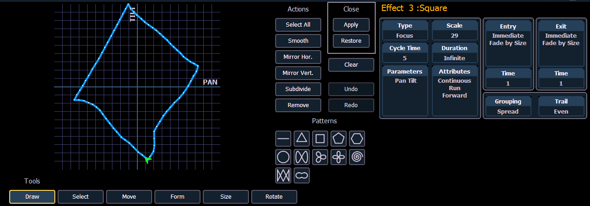

Define a Pattern Shape
Shapes can be defined for any relative effect (focus, color, or linear). You can either draw a pattern from scratch or use one of preexisting patterns as a starting point.
To define a shape, press the {Edit} softkey beneath the pattern editor. The softkeys will change to {Apply}, {Restore}, {Clear}.
- Press {Clear} to clear the pattern.
- Draw a new pattern using your finger (or the mouse), or select a preexisting pattern. If you want to return to the original pattern, press {Restore} before pressing apply.
- When you have the proper pattern drawn, press {Apply}. The pattern will be applied to the effect.
Note: If you delete a preprogrammed effect (for example, after making changes to it) the effect will return to its default value. You can also copy effects to another effect location and modify them from there. This will leave the original effect untouched.
- [Effect] [904] [Copy To] [8] [Enter]

The following tools are also available to edit the curve with the mouse or touchscreen:
- Draw - draw a new line for linear effects or append points to focus effects
- Select - select points of the curve (if no points are selected, all are changed)
- Move - move selected points, can also phase-shift the curve of linear effects in steps of 30 degree (only if no partial selection was made)
- Scale - scale linear effects on y-axis or focus effects separately on x- and y-axis
- Gamma - apply a log function to the curve (linear effects only)
- Size - scale focus effects on both axis
- Rotate - rotate focus effects around the center of the selected points
The following actions are available when editing the curve:
- Select All - selects all points
- Smooth - smooths the selected points
- Mirror Hor. / Vert. - mirrors the curve
- Subdivide - adds one point on each selected segment (useful to move that point or change the behavior of smooth)
- Remove - removes the selected points
- Undo - undoes the last operation
- Redo - redoes the last operation